其实那天是杀青日...所有没拍完的戏必须全部拍完...由于集数太多...每场戏不同的服装和不同的妆面和不同的发型...害的我可怜的头发被任尽摧残...
通常我都天天洗头...为了方便发型师做头发...一般我都没等它干就累得睡着了...经常第二天醒来头发还是湿的...
不过还好那天全部杀青了...当天晚上我累积了7天的疲劳...实在坚持不住...头也没洗就睡了..
在上海影城对面拍的这场戏...那天暴热
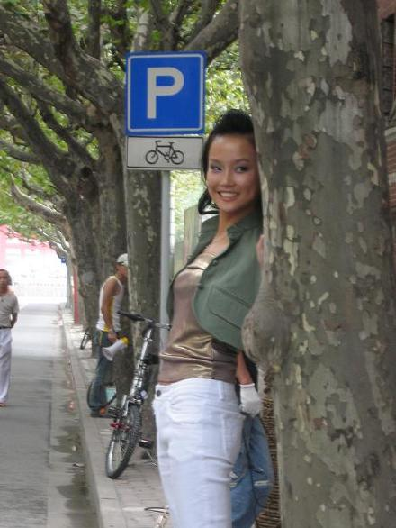
其实<晴天日记>里,服装提供基本上都是演员自己...剧组给找的衣服好多都不合适...所以基本上我把家里所有的衣服都般去了...
天热...油多
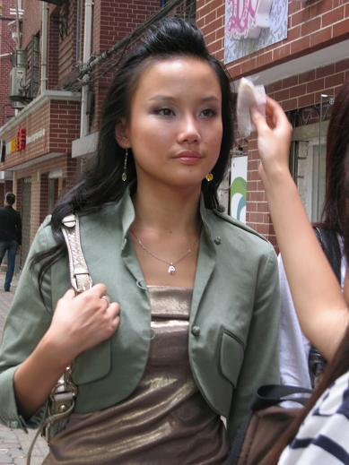
SUKI和李晴在不妆的时候都要互相翻白眼..哈...两个化妆师的手好象在照镜子一样
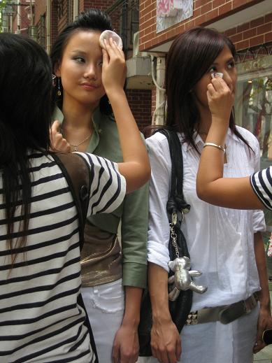
第一次光明正大在大街上拍戏...睡也睡不醒...不过还满爽的...有时候我有自虐倾向...越辛苦越满足
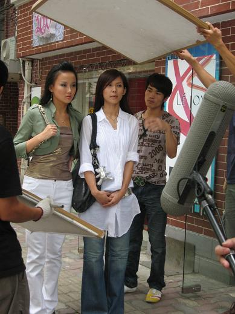
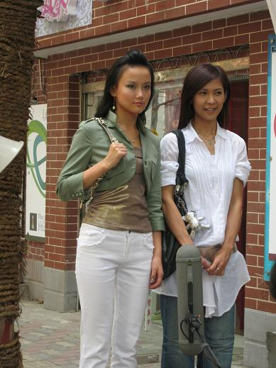
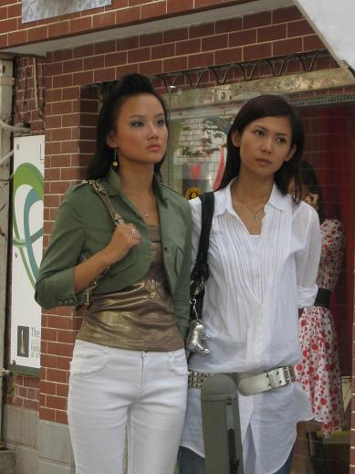
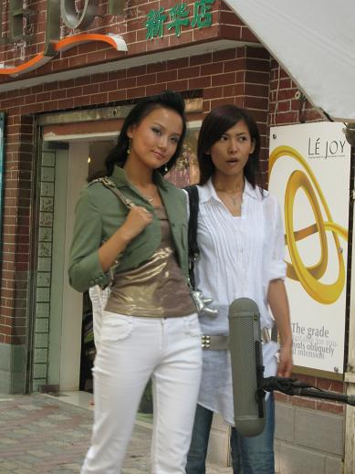
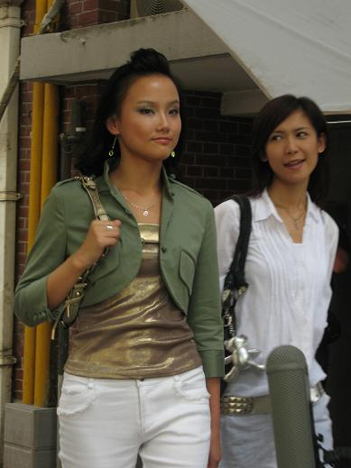
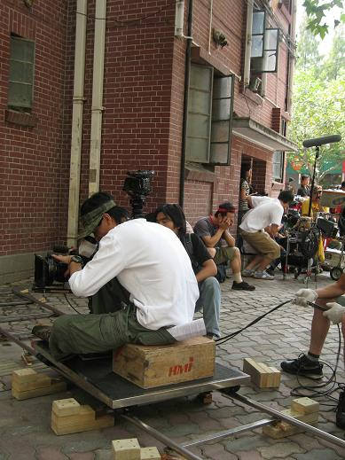
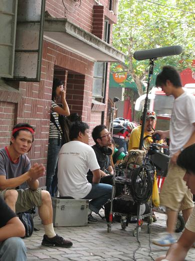
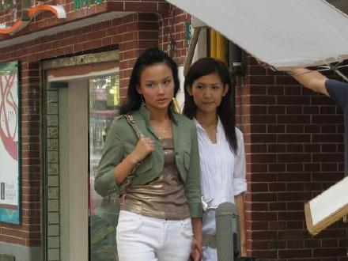
热死我了..
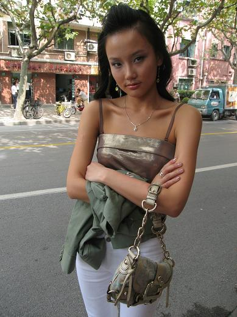
我们影响了交通...
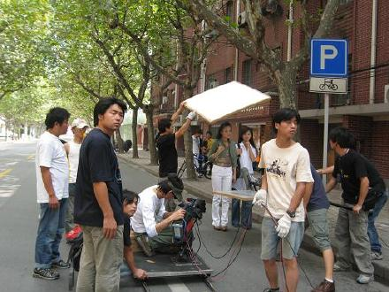
这个阿姨是在学我吗?嘻嘻
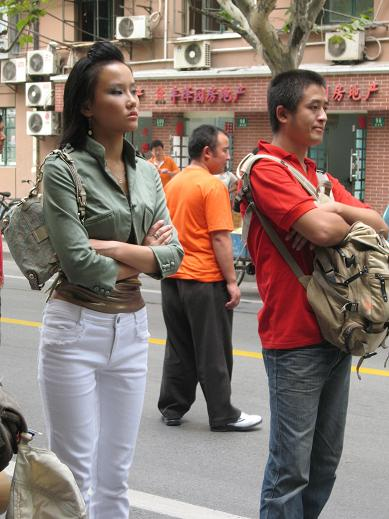